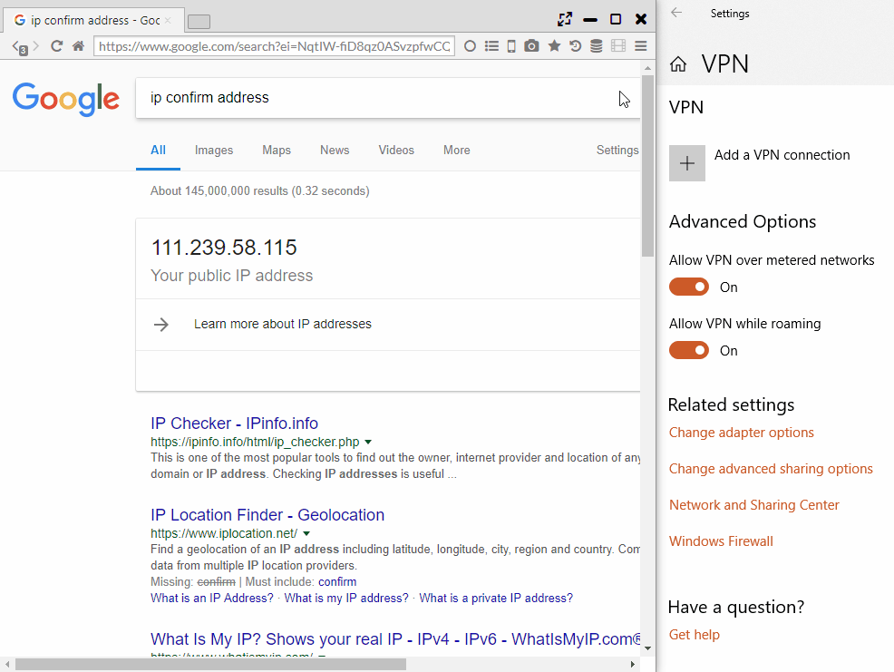

Privacy and Security
Sushi Browser carries functions regarding the privacy and security refering to the fonction of Brave Browser.
Adblock, Tor · Private · Session tab, VPN, HTTPS Everywhere, Tracking Protection, Fingerprinting Protection are carried.
1. Adblock
Equipped with a native-implemented high speed advertisement block.
It is possible to set up the validity or invalidity in all page, each tab and each domain from Main menu.

2. Tor Tab
This will be a tab where it uses anonymous networking system “Tor”. It makes network with high anonymity possible.

3. Private, Sesison tabs
These have a Private tab that strengthens its privacy and a session tab function where it makes the operation in separate sessions possible as other browsers.
In Session tabs, a tab gets a series number on the tab in each session.

4. VPN (Windows only)
It does VPN search with MS-SSTP VPN by using VPN Gate service.
* Since it creates and connects an actual VPN network connection on Windows, not a pseudo VPN, and network profiling is created.
When the "VPN server" is selected in "Main Menu > More Tools > Change VPN Mode", VPN communication is generated.

5. Other Privacy Protection Functions
- HTTPS Everywhere ・・・ Function to replace http communication with https communication as much as possible
- Tracking Protection ・・・ Protection function from tracking services such as Google Analytics
- Block Scripts ・・・ Function to disable Javascript (will break many sites)
- Fingerprinting Protection ・・・ Function to protect information reading by fingerprinting